El presente documento fue elaborado especialmente para el personal de Bibliotecas de la Pontificia Universidad Católica de Valparaíso. Este trabajo fue realizado en conjunto con bibliotecarios y diseñadores de nuestra Universidad.
El material descrito y entregado al personal de Bibliotecas es de su uso exclusivo para preservar la identidad de esta nueva propuesta, ofreciéndose material explicativo y de utilidad para poder comunicar distintos tipos de información de acorde a una sola identidad.
Puedes descargar automáticamente este documento en su versión PDF haciendo click aquí
A continuación se presenta una indización del material que dimensiona a grandes rasgos la renovación de Bibliotecas PUCV.
Índice de contenidos:
Las Bibliotecas son un punto de encuentro en donde se desarrolla el estudio y la adquisición del conocimiento de una forma dinámica.
Nuestro sistema de Bibliotecas aspira a llegar a ser un centro de estudio que trascienda en la vida de los estudiantes. Buscamos que nuestros usuarios vayan a la Biblioteca y generen instancias de estudio, ocio, recreación y desarrollo personal dentro de las herramientas que le brindan nuestros entornos.
Para ello debemos escalar nuestro trabajo de manera holística, considerando una adaptación de nuestros entornos, mejora de nuestros servicios e integración de nuestros canales, esto con el fín de generar sentido en la comunidad universitaria de que las Bibliotecas, son un nuevo entorno de trabajo.
El presente modelo representa cómo nuestro servicio de Bibliotecas se canaliza y hace presente en nuestra comunidad universitaria. Apuntamos a fidelizar nuestro servicio hacia tres aspectos primordiales: omnicanalidad, integración y trascendencia.
Nuestro servicio es un sistema holístico, útil y sensible que se adapta constantemente a las necesidades de los usuarios de forma eficaz y a favor de nuevas formas de aprendizaje.
Con esta visualización comprendemos que nuestras bibliotecas deben ser navegables, usables, transformables, y cohesivas para que trasciendan en la vida de nuestros estudiantes, influyendo en el valor simbólico del servicio y sobre todo trascendiendo en la vida de los estudiantes.
El principio de integración busca una homologación de los distintos puntos de contacto mediante el rediseño de la identidad visual. Esto ocurre a través del isologo, sitio web, señaléticas, infografías, boletines, mobiliario, etc.
De esta forma, los diversos puntos de contacto que posee la Biblioteca, conversan entre sí para generar un servicio omnicanal e íntegro, así la experiencia que tienen los estudiantes de nuestra universidad pueden comenzar una actividad en una biblioteca y continuarla en otra, o bien pueden generar una experiencia que comience de manera digital y termine de manera análoga, como por ejemplo la reserva de un libro, que comienza a través del sitio web, y culmina en el retiro eficaz y rápido.
La visibilidad y la transparencia en la infraestructura es fundamental para que ocurran las actividades de aprendizaje a un ritmo dinámico y activo. En base a esto, nuestros espacios interiores se abren hacia muros y límites bajos, separadores no obstrusivos, libreros bajos, separadores de vidrio, etc., aumentando así la visibilidad y luz al interior de los espacios bibliotecarios.
En paralelo a esto buscamos la implementación de nuevos espacios para el aprendizaje por fuera de los muros de las bibliotecas, abordando zonas exteriores que se identifiquen como parte del Sistema a través de la implementación de bancas o mesas de exterior, que se guien por señas gráficas como parte del sistema de Bibliotecas PUCV.
La comunicación oportuna en nuestros canales online y offline resulta esencial. Este principio dirige a los usuarios mediante las posibilidades de la señalización, infografías u otras herramientas.
Enfocados en usabilidad y accesibilidad a nuestras Bibliotecas.
Queremos proveer al Sistema de Bibliotecas con un enfoque en la usabilidad y la accesibilidad, a través de la ergonomía del mobiliario, la distribución accesible, estándares de usabilidad y accesibilidad web, esto mediante elementos tangibles, como Lectoescritura Braille, y digitales, ajustando estos elementos a diversas normas de accesibilidad web tales como tipografía y color bajo, parámetros recomendados por la W3C.
El diseño de los objetos e interfaces de forma modular nos permite ir adaptando los espacios con facilidad a medida que cada una de las Bibliotecas lo va requiriendo.
Adaptar los espacios con facilidad es un principio fundamental para replicar rápidamente el sistema a otras facultades, es por esto que a partir de metodologías del Diseño atómico, permiten que se generen moléculas de trabajo y organismos que se puedan ir multiplicando con facilidad.
El diseño de estos espacios móviles y dúctiles permiten distintas maneras o disposiciones del mobiliario, como por ejemplo, el Espacio Redes en la Biblioteca de Filosofía & Educación, generando instancias de seminarios, exposiciones o clases dictadas.
Bibliotecas PUCV presenta una renovación holística en cuanto a aspectos de identidad visual, es decir: paleta cromática, tipografía e isologo.
¿Por qué enfocarnos en un lenguaje visual e identitario?. Pues el lenguaje visual contribuye directamente a la construcción de la identidad y la comunidad universitaria.
Con esto, el valor simbólico de la Biblioteca contribuye a un cambio cultural en la comunidad, así potenciamos la frecuencia de uso de nuestras bibliotecas, los estudiantes no vienen de paso, sino que vienen a potenciar su desarrollo profesional y estudio personal.
Para generar esta identidad visual, hemos apropiado conceptos provenientes de las normas gráficas de la PUCV, principalmente tipografía, colores e isologo.
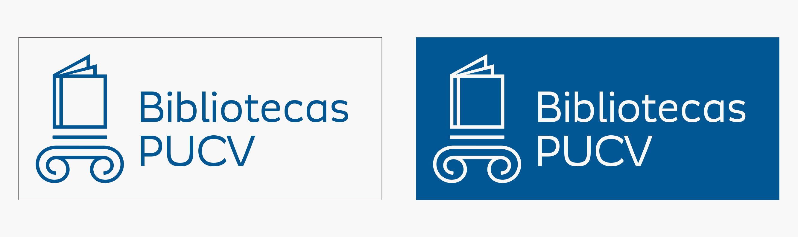 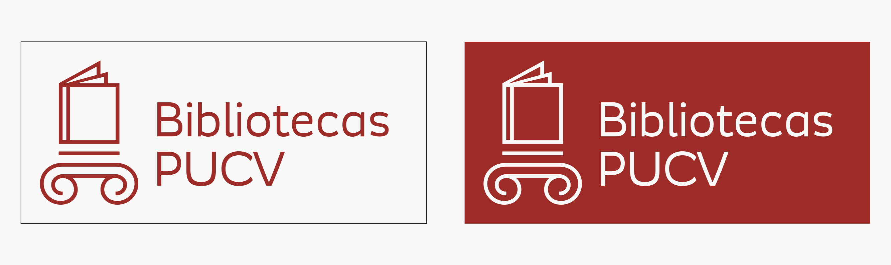Nuestra paleta cromática surge a partir de los colores de la Pontificia Universidad Católica de Valparaíso, es así como se preserva un sentido de pertenencia.
Ante esto, el color que lleva a la palestra de Bibliotecas PUCV es el Color Rojo (Pantone 7620 c) haciéndose cargo de dar la distinción a los canales de nuestro sistema de bibliotecas tales cómo: sitio web, señalización, boletines informativos y mobiliario.
Como colores complementarios, se encuentra el Color Azul (Pantone 301 c), Blanco (Pantone 663 c) y Negro (Pantone 419 c). Es así, que a partir de esta composición, se lleva a cabo una paleta cromática para Bibliotecas PUCV.

La tipografía de Bibliotecas PUCV proviene directamente de las Normas Gráficas de la PUCV, por ello, responde a las normas aplicadas para las submarcas de la PUCV.
"Modernica", es una tipografía desarrollada por Javier Quintana y distribuida por Quintana Font. La elección de la tipografía responde a su valor y peso visual, puesto que permite ser aplicada en diferentes estilos y formatos, tales como: sitio web, señaléticas, informes, u otros que permiten una fácil lectura y legibilidad.
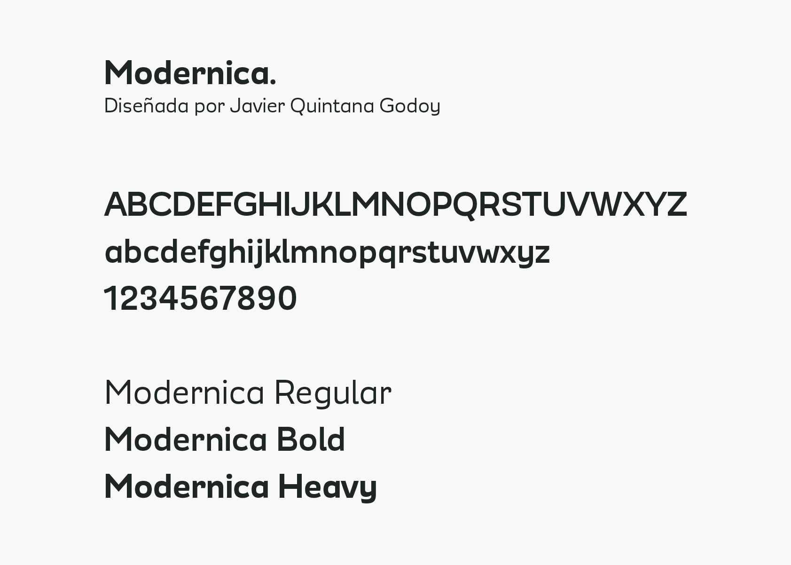Junto a esto, observamos de manera importante una relación con la familia tipográfica de la PUCV, por lo tanto, conservamos y preservamos el valor y sentido de pertenencia a nuestra comunidad Universitaria.
El Isologo para Bibliotecas PUCV proviene del Logotipo de la PUCV. Nos apropiamos del sentido de la cariátide y del libro, haciendo alusión a la fortaleza por el estudio como un elemento de cohesión y sustento entre comunidad e institución (cariatide) y, por otro lado, hacer alusión a la lectura y el depósito del conocimiento en las páginas (libro).
 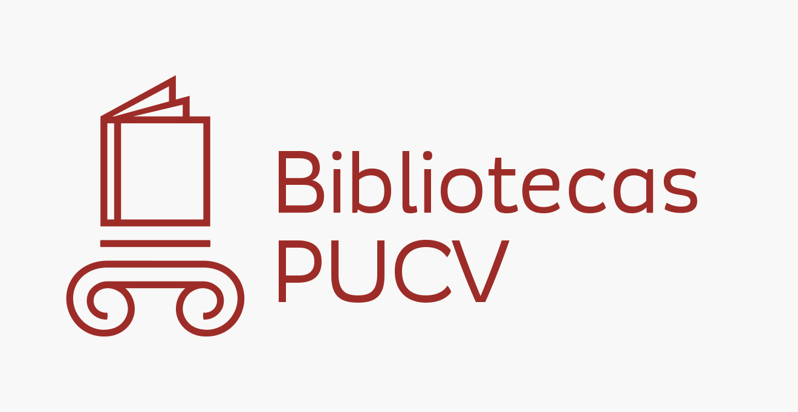
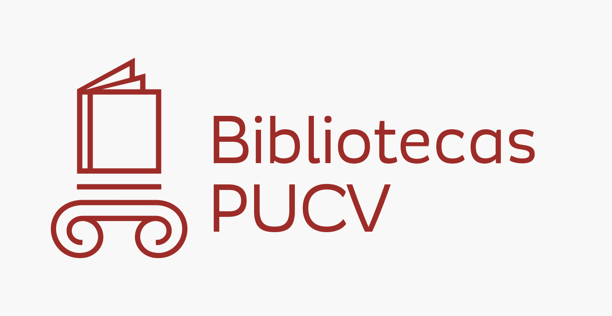
El isologo en su completitud contiene varios ajustes ópticos, terminaciones y márgenes. Esto permite que pueda adaptarse fácilmente a distintas escalas y soportes, así como por ejemplo: papelería, señalética, infografías, etc. Es por esto, que cualquier ajuste de trazos o formas, no puede ser realizada de manera azarosa.
De izquierda a derecha se presentan las variantes del isotipo (dibujo por sí solo). En primera instancia se muestra el esqueleto geométrico de la propuesta, posteriormente se muestra su versión de dibujo con el trazo completo.
En última instancia se presenta el isotipo con sus correspondientes márgenes y grillas, generada bajo el mismo grosor del trazo principal. Estos detalles se explican en el siguiente item.

El área de protección destinada para el isotipo (dibujo por sí solo) se genera bajo la medida de un trazo principal, esta medida (x) se replica a través de toda una grilla tanto de forma vertical como horizontal, dando así con una construcción equivalente en lo que respecta a dibujo y grosor del trazo.
En este aspecto el isologo (conjunto entre dibujo y texto) juega con esta misma congruencia gráfica (x) del grosor del trazo, es a partir de aquello que se empiezan a levantar grillas que definen su área de protección (5x), es decir, área por la cual no debe intervenir otro elemento ajeno al dibujo, es un márgen que permite mantener limpia el área del isologo.
Esta regla (5x) aplica para cualquier elemento que se acerca al isologo, incluyendo textos u otros logotipos.

El orden correcto siempre será situar el logo de la PUCV antes que el isologo de Bibliotecas PUCV (de izquierda a derecha).
Ambos isologos mantienen un horizonte visual trabajado cuidadosamente, por lo cual es primordial mantener un horizonte de lectura a partir de los textos y dibujos de ambos logotipos.
Bajo esta misma línea también se propone mantener una jerarquía respecto a las “entidades” universitarias.
Es por esto, que se propone que la utilización de ambos isologos presente un orden lógico, dejando en primer lugar el logotipo de la Universidad, y en segunda instancia el isologo del Sistema de Bibliotecas, dando a entender que es una unidad (o servicio) que nace desde las dependencias de la PUCV.
 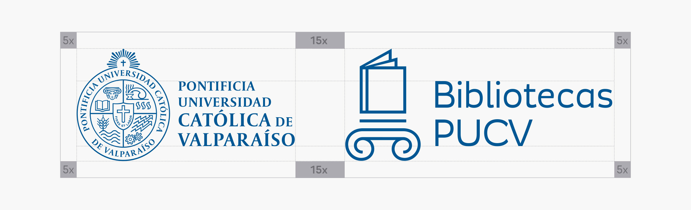
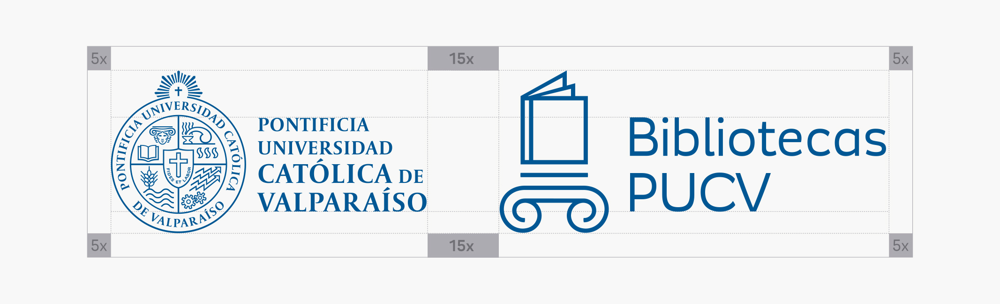
Las decisiones gráficas demuestran una eficacia respecto al color con otros elementos gráficos. Esta legibilidad está dada por la armonía entre el isologo, la tipografía y el color. Es por esto que existen contrastes admitidos y no admitidos para la aplicación del isologo en sus distintos formatos.
Para preservar términos de legibilidad y contraste, los colores han sido calibrados bajo parámetros de la W3C (World Wibe Web Consortium), entidad que establece normas básicas de accesibilidad y legibilidad web.
Es importante no modificar estas normas, pues esto genera de inmediato una pérdida de valor. Además, se recomienda evitar ciertas nomenclaturas entre los colores, ya que así se pierden valores de visibilidad e identidad.
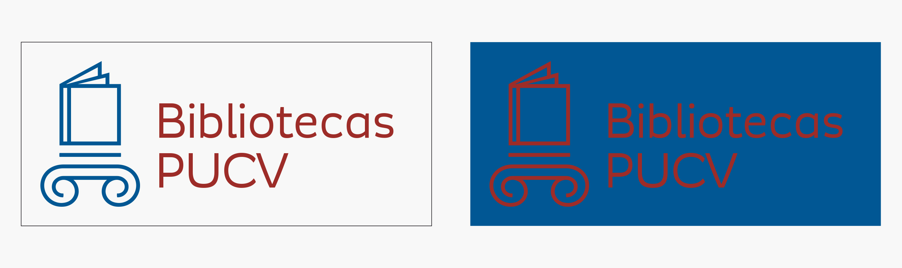
En esta sección se describe principalmente cómo la nueva visión de Bibliotecas PUCV influye directamente en la distribución de nuevos espacios y áreas de estudio que tienen por finalidad, fomentar nuevas formas de aprendizaje colaborativo (basados en el trabajo de aula invertida).
Un entorno bibliotecario debe ser amable y eficaz. Un entorno descuidado influye directamente en la calidad de la experiencia. Dicha relación se hace tangible en los puntos de contacto de nuestras Bibliotecas: objetos, arquitectura, mobiliario, climatización, etc.
Climatizar los entornos de nuestras bibliotecas hacia un ambiente más agradable, iluminado, pulcro y moderno, potencian el hecho de que nuestro servicio sea útil bajo condiciones de confort, seguridad e igualdad para todas las personas. Hemos modernizado nuestro sistema de climatización, aire acondicionado, aislamiento de ruido, muebles, mesas de trabajo, sillas, poltronas, estanterías, etc.
Recordando las bases de nuestro modelo piramidal con el fin de que la experiencia de uso en Bibliotecas PUCV sea fructífera, debe de haber una buena mantención en los entornos, climatización adecuada y espacios luminosos.
Ante esta premisa, ahondamos en cada forma de distribución espacial pensada para Bibliotecas PUCV fundamentadas por la metodología del Diseño atómico, esto canalizado o ejemplificado a través de dos casos de estudio e implementación: Biblioteca de Filosofía & Educación, ubicada en Campus Sausalito y, Biblioteca de Negocios, ubicada en la nueva Escuela de Negocios & Economía.
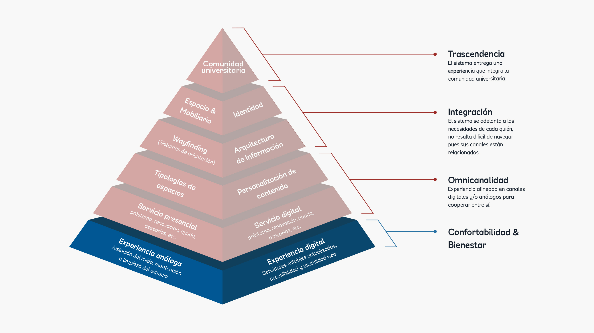Los espacios de trabajo en Bibliotecas PUCV han sido diseñados para dar movilidad y libertad a los estudiantes de la Universidad, junto a los principios de Diseño se han definido espacios basados en la metodología de Diseño atómico. Dicho esto se han configurado nuevos “espacios” que logran demarcar y construir nuevas conductas y formas de estudio.
La metodología del Diseño atómico apunta hacia el desarrollo lógico de los espacios dentro de un sistema complejo a través de elementos modulares que pueden ser agrupados de tal manera que configuren un ecosistema.
Traducido esto a nuestros espacios en Bibliotecas PUCV, estos se configuran mediante átomos de trabajo, moléculas de trabajo y organismos complejos.
Son las unidades mínimas que configuran el espacio, tales como poltronas, mesas de trabajo grupal o individuales, sillas, pizarras y estanterías.
Por otro lado, se consideran como átomos de diseño algunos elementos gráficos tales como: tipografía, color, señalética, isologo.
El mobiliario es moderno, modular y dúctil con el fin de ir facilitando esta repetición a través de distintas moléculas que conforman agrupaciones, no tan así el caso para las piezas gráficas, si bien cada una es un componen por sí solo (color, tipografía, isotipo) en su conjunto crean y apoyan la configuración de estos átomos a través de la señalización y la representatividad gráfica del sistema.
Conforman un pequeño ecosistema en torno al acto. Es el esqueleto principal que caracteriza los espacios (o salas). Ejemplos de moléculas de trabajo son: diálogo, multimedia, estudio grupal , estudio individual, estudio de pares.
Esto facilita su comunicación, identificación y uso, tanto por parte de los estudiantes como por parte de los funcionarios de nuestro sistema.
Estas moléculas diseñadas fomentan el trabajo colaborativo y multimedia a través de la conformación de grupos de trabajo, el estudio individual y privado, además del debate y la colaboración con otros pares. Cada molécula es de uso abierto y libre, es decir, puede ser utilizada tanto para el estudio como para el ocio, descanso o recreación de los estudiantes.
Son conjuntos de una o más tipos de moléculas que comunican el tipo de comportamiento a través de la señalización y el mobiliario.
Estas áreas han sido nombradas como “Espacios” con el fin de remover el sentido o concepto de una sala de estudio como tal (entiéndase sala como un espacio cerrado de 4 paredes).
Esto con motivo de dar a entender que nuestras Bibliotecas son espacios abiertos de libre uso para los estudiantes, en donde no se prohiben o permiten hacer ciertas cosas, sino que más bien, se le da la autonomía al estudiante para que aprenda por su cuenta a utilizar estos espacios según su necesidad de estudio o desarrollo personal.
Estos “espacios” son los que en su conjunto engloban la complejidad del sistema. Ejemplos de espacios en Bibliotecas PUCV son: Espacio Redes, Espacio Nodos, Espacio Cubículos, Espacio Lúdico.
Espacio Redes funciona como un entorno diseñado para potenciar el trabajo colaborativo y autónomo mediante el uso de tecnología y mobiliario moderno y dúctil. De esta forma se propicia el aprendizaje basado en proyectos, problemas y el trabajo de aula invertida.
Espacio Nodos es un área de trabajo está destinada y pensada para el trabajo individual o de pares, permitiendo a los estudiantes mantener privacidad, además de cierta normativa y respeto por el estudio del otro.
Espacio Cubículos se comprende como un área de trabajo grupal cerrada que permite el trabajo colaborativo y el debate. Se acompaña de pizarras y pantallas LED. Ante las nuevas normativas condicionadas por la Pandemia de COVID-19, los cubículos permiten un aforo máximo de 4-6 personas y deben ser solicitados con antelación en el sitio web de Bibliotecas PUCV.
Espacio Lúdico es un área que abre cabida al juego, la recreación y el ocio en medida que se respete el espacio y estudio del resto. Los estudiantes pueden hacer uso de los estantes de juego así como también de las mesas lúdicas y mesas individuales, sillas y sillones que se ofrecen, compensando así los tiempos de estudio con tiempos de descanso y ocio.
En la Biblioteca de Filosofía & Educación se ofrecen nuevos espacios de trabajo autónomo y colaborativo que fortalecen el concepto de trabajo de aula invertida. Para esto se han diseñado nuevos espacios a la par con la renovación del mobiliario y climatización, transformando la actual Biblioteca en un lugar hospitalario, cómodo y cuidado.
El nivel 2, correspondiente al Nivel de Literatura dentro de la misma biblioteca tiene diversas áreas, por ejemplo zonas de silencio para un estudio individual o de pares como el Espacio Nodos, áreas de diálogo y trabajo colaborativo como el Espacio Redes, además de diversos cubículos que se pueden utilizar para un trabajo grupal cerrado. Las siguientes imágenes representan una vista en planta de las nuevas propuestas y una vista isométrica para representar el mobiliario.
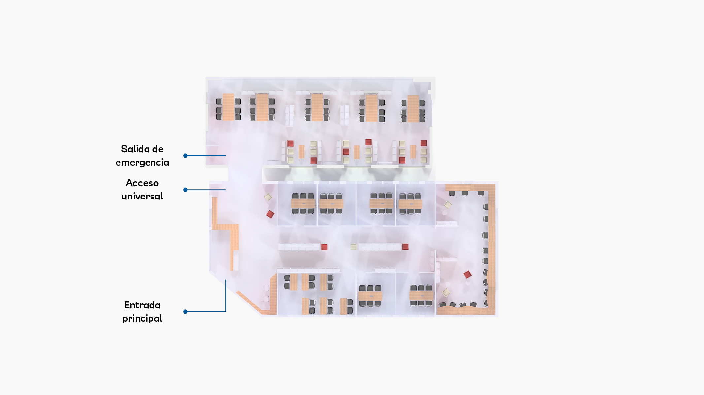 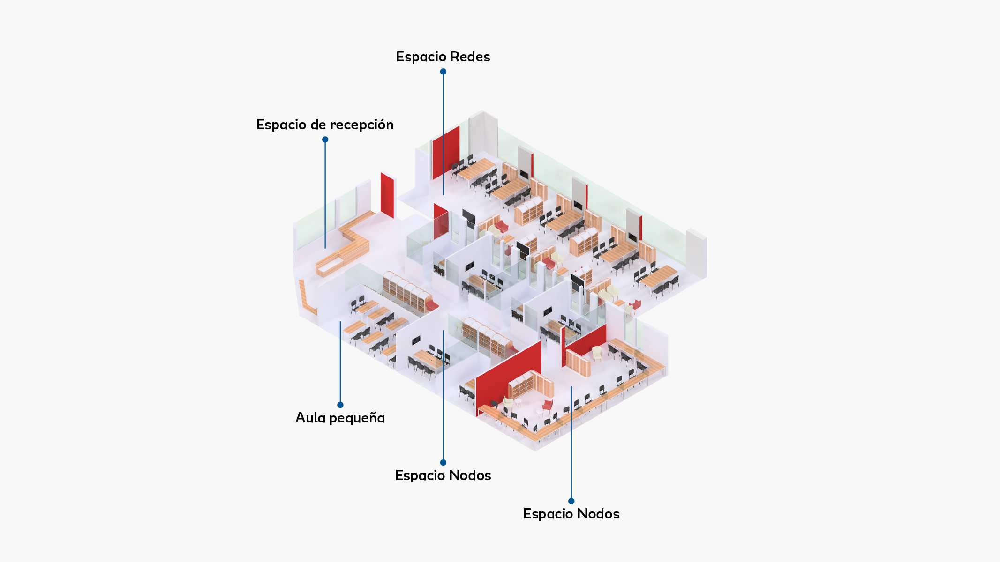El espacio de recepción es un espacio de rápido acceso donde se podrá consultar a un bibliotecario en caso que se necesite retirar, reservar, o consultar por un libro.
Esta área además tiene mesas y sillas perimetrales para un trabajo individual
En este espacio se encuentran además los estantes de reserva por los cuales se podrán retirar los libros que ya se han reservado con anticipación a través del sitio web de Bibliotecas PUCV.
En esta área se encuentran moléculas de trabajo tales como: Estudio individual o de pares.
En esta Biblioteca se ofrecen 7 cubículos para el trabajo grupal cerrado de 4 a 6 personas. Cada espacio cuenta con sillas, una amplia mesa de trabajo con puntos eléctricos, una pizarra y una pantalla LED para presentar o compartir material audiovisual.
Ante las nuevas normativas condicionadas por la Pandemia de COVID-19, los cubículos permiten un aforo entre 4-6 personas y deben ser solicitados con antelación en el sitio web de Bibliotecas PUCV.
Siempre debe recordarse que para utilizar los cubículos, deben reservarse su utilización de forma online o presencial con anticipación.
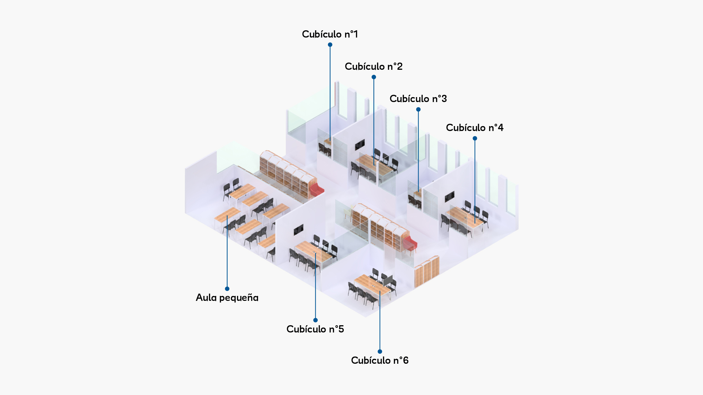En el Espacio Cubículos, estas moléculas son nombradas como Estudio grupal cerrado.
Esta zona está adaptada para el estudio individual o de pares, de modo que apunta a un trabajo mayoritariamente silencioso.
En Espacio Nodos se pueden encontrar sillones para una cómoda lectura y escritorios para el trabajo en computador personal.
Los estudiantes pueden elegir de forma libre el espacio que mejor se acomode a su necesidad de estudio.
Deben respetarse las normas básicas de una Biblioteca, siendo el silencio y el respeto lo primordial.
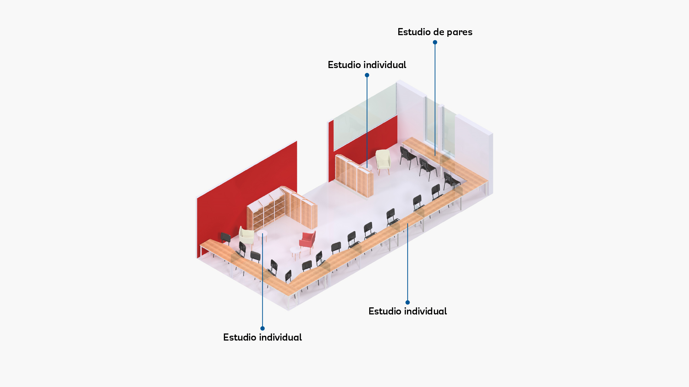Este espacio se puede identificar mediante moléculas de trabajo tales como: Estudio individual, Estudio de pares.
Espacio Redes funciona como un entorno diseñado especialmente para potenciar el trabajo colaborativo y autónomo.
De esta manera, la Biblioteca propicia el aprendizaje basado en proyectos, basado en problemas y el trabajo de aula invertida.
En este espacio existen células de trabajo llamadas “multimedia” y “diálogo”. En ellos se encontrarán pantallas LED con el fin de mostrar material audiovisual mediante conexión Wifi u otro medio directo (HDMI por ejemplo), pizarras móviles, mesas y sillones de descanso distribuidas en toda la sala.
Espacio Redes se puede identificar por poseer moléculas de trabajo tales como: Diálogo, Multimedia.
La movilidad de este “laboratorio” en donde los estudiantes pueden trabajar de forma colaborativa y autónoma, también contempla un espacio apto para exposiciones, lecturas, seminarios o clases.
El diseño que ha requerido el mobiliario en este espacio, debido a su modularidad, permite una transformación espacial que acomoda los elementos de forma rápida y eficaz, así es como el principio de versatildiad de los espacios se hace presente.
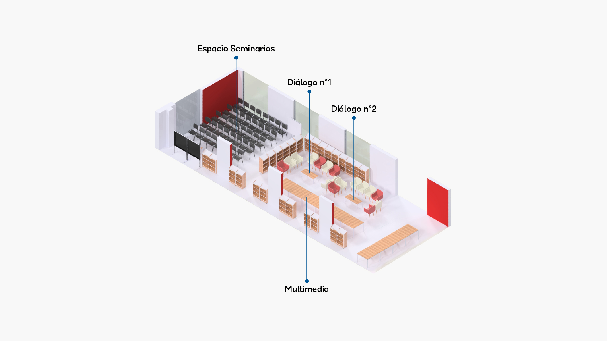Esto permite una mayor interacción y mejores flujos de conversación entre profesores y estudiantes. Puede solicitarse a un Bibliotecario (o encargado) un horario para usar el espacio en modo seminarios.
Zona diseñada especialmente para fomentar el trabajo colaborativo y multimedia a través de la conformación de grupos de trabajo. Los códigos de conducta en esta molécula de trabajo permiten el debate libre y espontáneo entre los estudiantes que conforman estos grupos (de hasta 8 personas).
El mobiliario que compone esta molécula está formado por: sillas de trabajo, mesa de trabajo y pantalla LED.
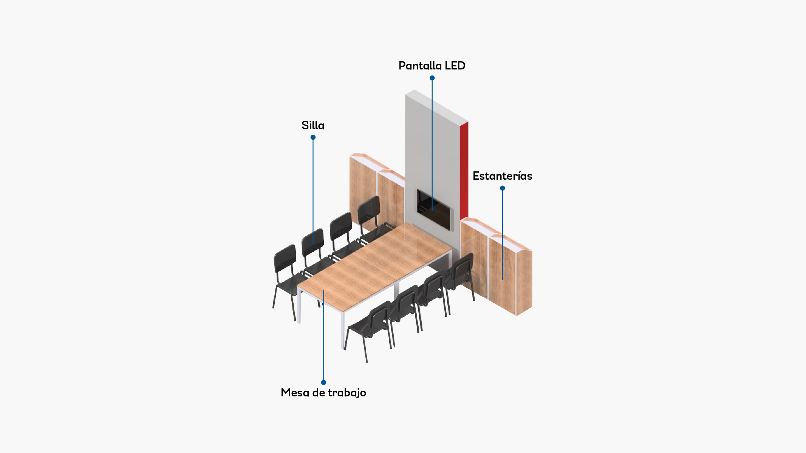Los estudiantes pueden hacer uso de estas herramientas de forma libre siempre y cuando mantengan el orden y cuidado del entorno.
Diálogo es un espacio diferente de trabajo más versátil, se puede dar el estudio individual y privado además del debate y la colaboración con otros pares.
Este espacio de trabajo permite que los estudiantes puedan beber un té o un café siempre y cuando se mantenga limpio y ordenado.
Este espacio a diferencia de Multimedia provee una pizarra móvil que los estudiantes pueden utilizar para su estudio, además de sillones de descanso donde pueden sentarse cómodamente.
En la Biblioteca de Negocios se busca promover nuevos métodos de estudio y aprendizaje donde se potencie el trabajo autónomo y colaborativo.
Se ofrece la posibilidad de utilizar los espacios de diversas maneras. Existen áreas de silencio para el estudio individual, espacios de diálogo para el estudio grupal e incluso zonas de recreación, juego y ocio. También se pueden utilizar los cubículos previamente reservados para el trabajo grupal privado.
Además se adhieren a esta Biblioteca dos aulas destinadas para clases o tutorías de la asignatura de Inglés y también para estudiantes de posgrado, entre otros, ajustándose a los requerimientos propios de los estudiantes, respectivamente.
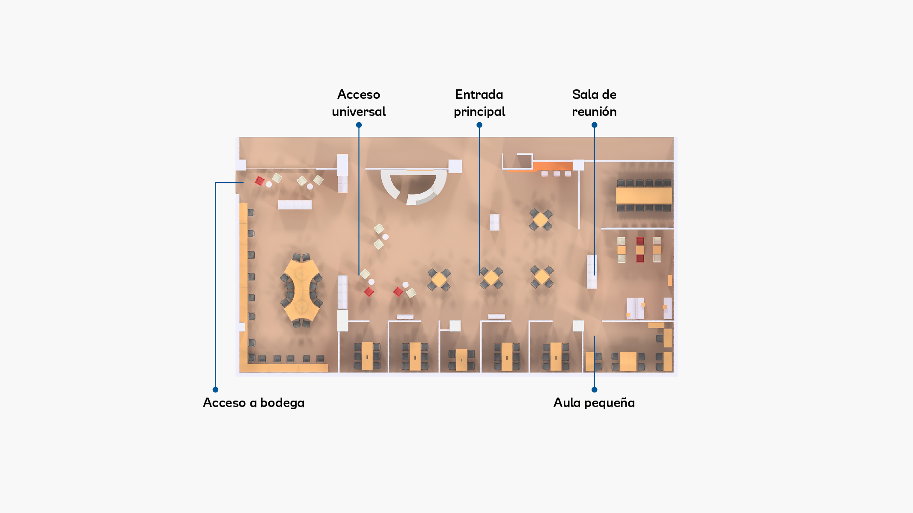 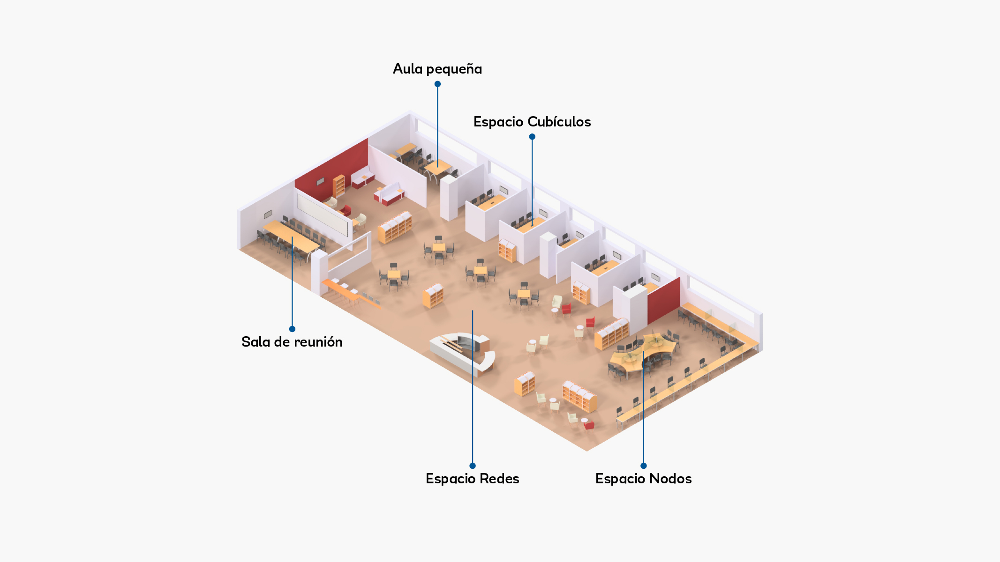Esta zona promueve el trabajo colaborativo en conjunto con un mobiliario adaptado para el trabajo grupal.
En el Espacio Redes se pueden mantener conversaciones en un volumen medio, pero debe cuidarse el respeto por los pares que puedan requerir de mayor concentración y silencio.
Puede hacerse uso de los sillones para un estudio más cómodo así como también de las sillas y mesas de trabajo en grupo.
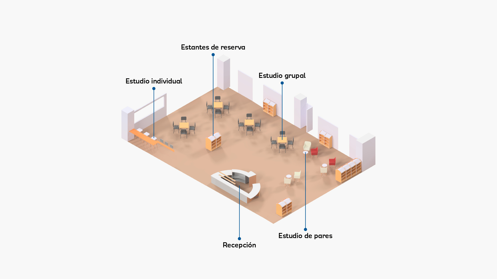En este espacio existen moléculas de trabajo tales como: Estudio individual, Estudio grupal, Estudio de pares.
Esta zona está adaptada para el estudio individual o de pares, de modo que apunta a un trabajo mayoritariamente silencioso.
En el Espacio Nodos se encuentran sillones para una cómoda lectura así como también escritorios para el trabajo en computador personal.
Los estudiantes pueden elegir el espacio que mejor se acomode a su necesidad de estudio.
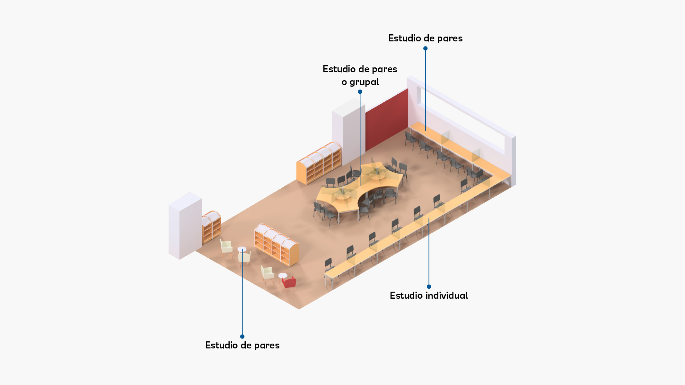En Espacio Nodos existen moléculas de trabjo tales como: Estudio de pares o grupal, Estudio de pares, Estudio individual.
Esta área abre cabida al juego, la recreación y el ocio en medida que se respete el espacio y el contexto de estudio de los demás estudiantes.
Los estudiantes pueden hacer uso y encontrar diversos juegos de mesa para compartir con sus pares en el estante de juegos, así como también de las mesas lúdicas y mesas individuales, sillas y sillones que se ofrecen.
Es importante conciliar los momentos de estudio con tiempos de descanso y diversión.
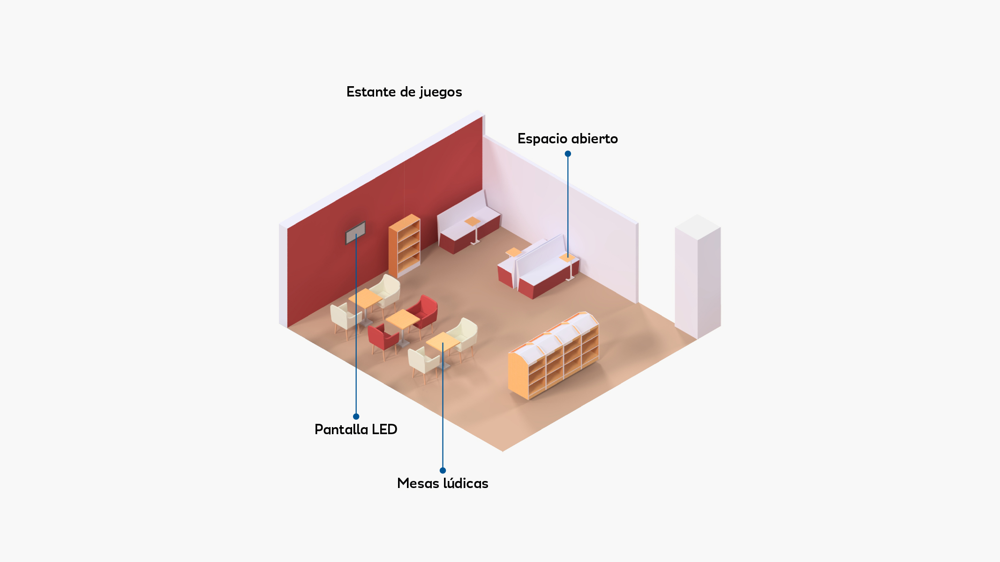Este espacio se identifica a través de moléculas de recreación tales como: Mesas lúdicas y Espacio abierto.
En esta Biblioteca se encuentran 5 cubículos que ofrecen un área cerrada de trabajo para grupos de 4 a 6 personas que permite el trabajo colaborativo y el debate.
Cada espacio cuenta con sillas, una amplia mesa de trabajo con puntos eléctricos, una pizarra y una pantalla LED para presentar y compartir material audiovisual.
Debe recordarse que hay que reservar de forma online o presencial con anticipación y dejar los cubículos ordenados y limpios después de su uso.
En el Espacio Cubículos estas moléculas son nombradas como "Estudio grupal cerrado”.
Las aplicaciones de nuestra identidad visual se canalizan mediante tres elementos fundamentales: señalización, sitio web y boletines informativos. Cada uno de estos canales, en representación de la experiencia análoga y digital, son los derroteros principales para comunicar esta nueva identidad.
La señalización es una manera de plasmar la identidad de nuestro sistema, resolviendo los problemas de orientación y acceso a la información que se desea entregar, es un instrumento que protege nuestro entorno, convirtiéndose así en una herramienta informativa vital que plasma la identidad de Bibliotecas PUCV.
Ante esto, la señalización para Bibliotecas PUCV busca la congruencia y homologación entre materialidad, color y tipografía, además de facilitar la movilización autónoma, el ahorro del tiempo para el personal bibliotecario y una modularización que permite su recambio a medida que sea necesario.
Es clave mantener un orden y constancia en la materialización de cada una de las señaléticas planteadas para Bibliotecas PUCV, por lo cual, se describe cada una de ellas de manera tal que se conserve estos elementos.
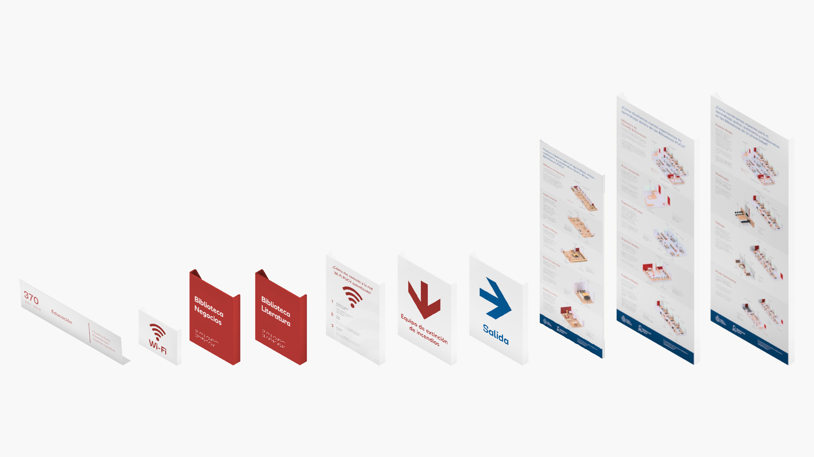Es fundamental hacer uso de señalización que pueda indicar elementos de emergencia (equipos de extinción) o vías de evacuación.
La materialidad destinada para esta señalización es de aluminio compuesto de color blanco, además de vinilo adhesivo rojo y azul según corresponda, esto para identificar de forma fácil y eficiente elementos de emergencia y vías de salida ante casos de emergencia.
Esta señalización posee un formato que le permite ser modular, es decir que puede ser renovada o reubicada.
Sin embargo la información transmitida no puede ser modificada, puesto que debe estar relacionada a normas del IST (Instituto de Seguridad del Trabajo) o usarse ese tipo de señaléticas en su defecto.
La señalización en lectoescritura Braille, abre camino hacia el acceso a la información y los espacios. Ante esto, como parte de la propuesta del Sistema de Señalización se contempla lectoescritura Braille para puntos estratégicos y direccionales de las Bibliotecas, esto con el fin de ir desarrollando un lenguaje que apoye el acceso a las Bibliotecas a personas con una capacidad visual reducida.
En esta sección se describen las recomendaciones básicas y obligatorias para una buena rotulación de Señalética en Lectoescritura Braille dentro de Bibliotecas PUCV. Dichas recomendaciones han sido realizadas bajo el estudio y las normativas de la CBE (Comisión Braille Española), entidad a cargo de estandarizar el lenguaje y la escritura del sistema braille en rotulaciones.

La señalización de las estanterías contempla dos propósitos: elaboración autónoma y modular. Esta señalética se compone por dos elementos: plástico acrílico (sujeto directamente a los estantes) y una papeleta informativa. Estos elementos hacen de esta señalización un elemento modular que permite ser modificado constantemente según lo necesite la Biblioteca. La información representada en esta señalización está basada en el Sistema de Clasificación Decimal Dewey. Utilizando así, de forma genérica, el número del concepto, el concepto mismo y sus respectivas derivaciones.
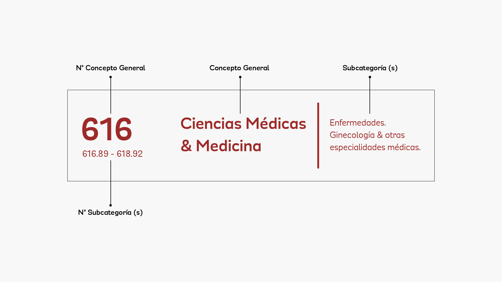Para la sostenibilidad de este elemento gráfico y comunicacional, se ha creado una plataforma online para la generación de estas etiquetas de manera autónoma por parte de los bibliotecarios que conserva los lineamientos gráficos. Aquí es posible acceder a esa funcinoalidad
El Lenguaje infográfico de Bibliotecas PUCV está basado primordialmente en la elaboración de infografías que indiquen los espacios principales de la Biblioteca, su mobiliario, y las condiciones de uso.
Este Lenguaje se compone a través de dibujos realistas e isométricos del espacio y un relato, el cual acompaña estos dibujos de forma explicativa ahondando en la descripción de los espacios, cómo se componen y cómo los estudiantes pueden utilizarlos.
Apunta a ser explicativo y descriptivo con el motivo de que los estudiantes sean capaces de recibir la información y aplicar los códigos de conducta sin tener la necesidad de acudir a un bibliotecario a no ser que sea estrictamente necesario.
El sitio web se trata de un canal informativo crucial para Bibliotecas PUCV, conformándose como una bajada clave del sistema. Nuestro sitio web contempla tres principios en los cuales se configura su disposición y apariencia.
Nuestro sitio web reordena su contenido a disposición de los estudiantes con un enfoque claro en entregar herramientas de fácil acceso. Contempla además que las iniciativas del sitio se ajusten a la propuesta de acuerdo a las normas gráficas preestablecidas, apoyando así la coherencia visual y el acceso a la información.
El sitio web propone un reordenamiento del contenido de acuerdo a jerarquías necesarias, un cambio en ciertas rotulaciones evaluadas como confusas por parte de los usuarios y una presentación del contenido de fácil y rápido acceso, además contempla nuevas interacciones que permiten eficacia y sincronía en el servicio (omnicanalidad).
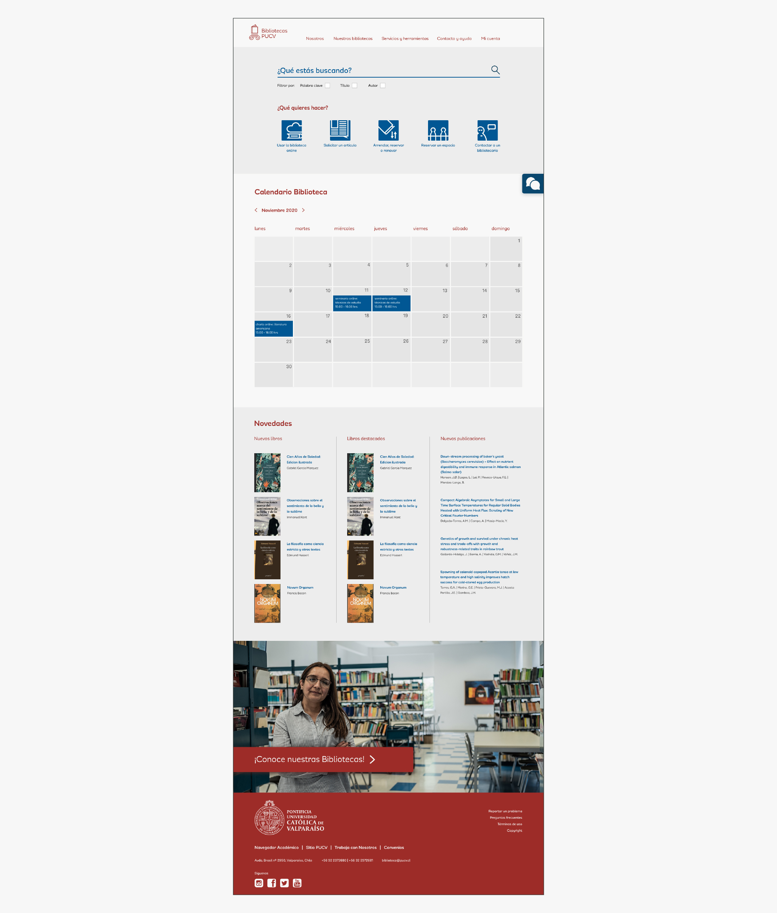Uno de los canales informativos más potentes y activos para Bibliotecas PUCV son los “boletines informativos”. Su cuidado no es menor, es un formato digital en donde la imagen de marca también se hace visible a través de la entrega de información importante y útil para los estudiantes.
Se configura un sistema y un lenguaje visual propio y acorde a las normas gráficas preestablecidas. Ante esto se genera un ejemplo de boletín informativo, maqueta inicial para poder comunicar dos preguntas principales: ¿Cómo nos presentamos ante los estudiantes?¿Cómo humanizamos nuestro sistema?.
Para ello el ejercicio gráfico de aplicación de marca se centra en esta ejemplo de boletín informativo.
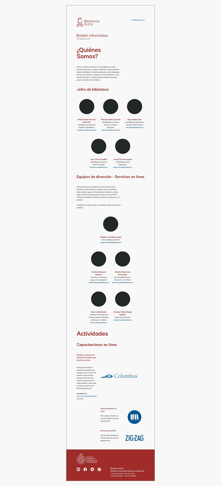